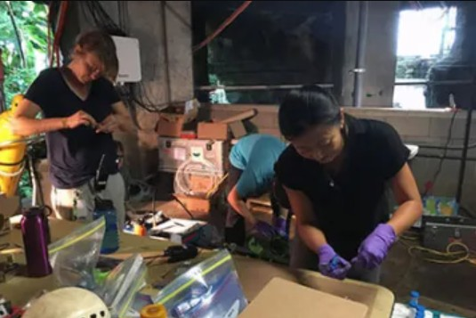

REU Summer Program
Research Experiences for Undergraduates — a 10-week NSF-funded summer internship at Biosphere 2 in environmental and Earth systems science.
Program Overview
The Biosphere 2 REU provides undergraduates an opportunity to conduct guided research in environmental and Earth systems science at a leading and unique research institution.
We are recruiting ten students for 2026 summer. Students receive stipends of $6,000 for the 10-week research internship, food allowance, housing on the Biosphere 2 campus, funding for travel to and from Tucson, AZ, and support for travel to a professional meeting to present their work.
Program Background
The REU program at Biosphere 2 is supported by a grant from the National Science Foundation. We share the goals of the NSF to use the REU experience as a way to provide research opportunities for students who might not have such opportunities readily available at their home institutions.
Five Interrelated Components
- The practice of research on individual projects
- The context of that research within the broader interdisciplinary Earth system sciences framework
- The relevance of that research in terms of environmental and societal challenges
- Professional development for Earth and environmental science careers
- The ability to communicate research process and findings to broad audiences
How to Apply
To apply, please fill out the Qualtrics application, attaching a 2-page maximum narrative statement of educational and career goals, research experiences and interests, plus two contacts for letters of recommendation from faculty at your home institution.
Eligibility
Students majoring in environmental or Earth system science fields — hydrology, soil science, geology, atmospheric science, biology, ecology, plant sciences, mathematics, physics, chemistry, or computer science — are well suited to participate. Students must be U.S. citizens or permanent residents to be eligible for NSF/REU grant support.
Questions?
Contact the program directors: Dr. Katerina Dontsova (dontsova@email.arizona.edu) or Dr. Kevin Bonine (kebonine@arizona.edu).
Apply Now